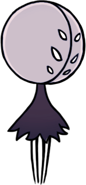

O Ninho Profundo é muito único e especial. Ele exala toda a capacidade da Team Cherry de criar uma ambientação exatamente como eles querem. Desde as aranhas passando na frente da tela, os corredores longos e apertados, o labirinto que é esse lugar até a trilha e efeitos sonoros. A construção desse lugar é simplismente fenomenal, com pontos para explorar por todo o lado. Você talvez encontre uma cara familiar por aqui...
O Ninho Profundo é muito único e especial. Ele exala toda a capacidade da Team Cherry de criar uma ambientação exatamente como eles querem. Desde as aranhas passando na frente da tela, os corredores longos e apertados, o labirinto que é esse lugar até a trilha e efeitos sonoros. A construção desse lugar é simplismente fenomenal, com pontos para explorar por todo o lado. Você talvez encontre uma cara familiar por aqui...
"Pálido presente para o Ninho e a Besta, e troca justa por sacrifício feito. Há muito tempo ela está distante.
Faria bem aos nossos espíritos se ela nos agraciasse com uma visita em casa..." - Parteira
"Este l-lugar me dá arrepios. Criaturinhas perversas irrompem por todo o lugar e as passagens são um labirinto escuro e sinuoso. A menos que esteja bem preparado, recomendo que saia, mas se estiver se sentindo forte o suficiente para descer, gostaria de comprar meu mapa?" - Cornifer
"Este l-lugar me dá arrepios. Criaturinhas perversas irrompem por todo o lugar e as passagens são um labirinto escuro e sinuoso. A menos que esteja bem preparado, recomendo que saia, mas se estiver se sentindo forte o suficiente para descer, gostaria de comprar meu mapa?" - Cornifer